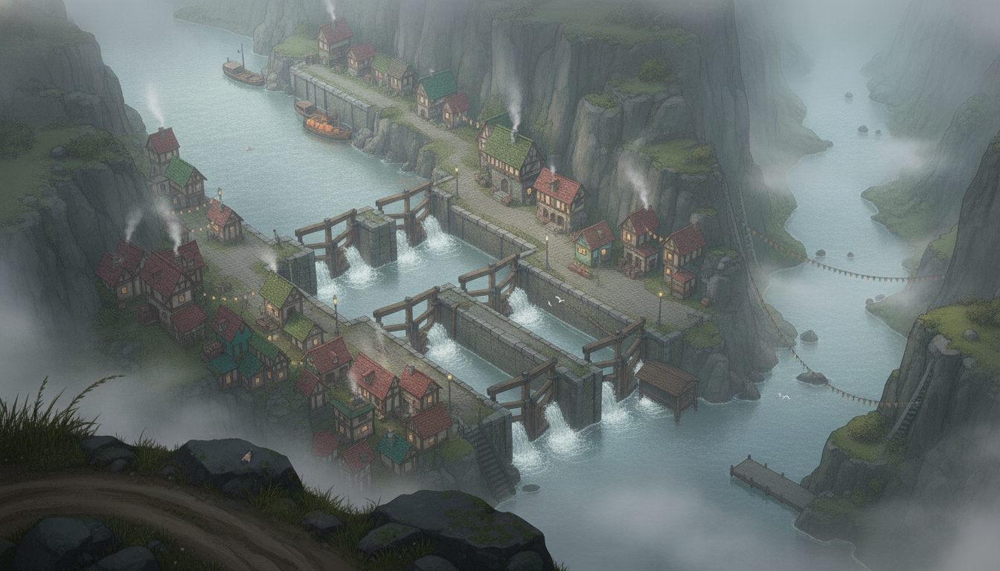
accepted — vista/main.png. The valley read-aloud: queue + pumpkin barge upper-left, lock chain, roofed Lock Five, bunting, jetty in the tailwater, north haze top-right, rim + moth foreground.
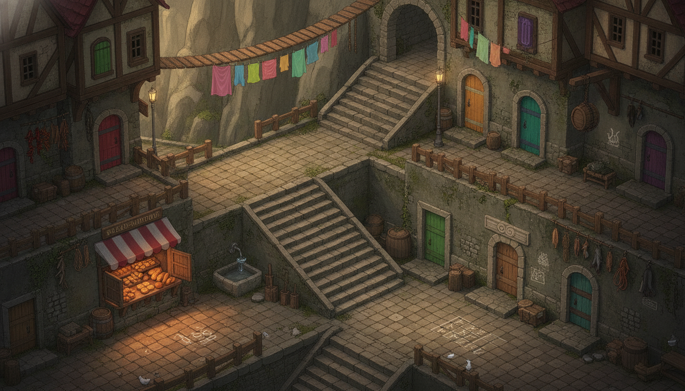
accepted — stairs/main.png. The color-rule showcase: hull-paint doors (no two alike), laundry flags, striped awning, cistern, chalk games, hoist, gulls, the one plain carved-lintel keepers' door.
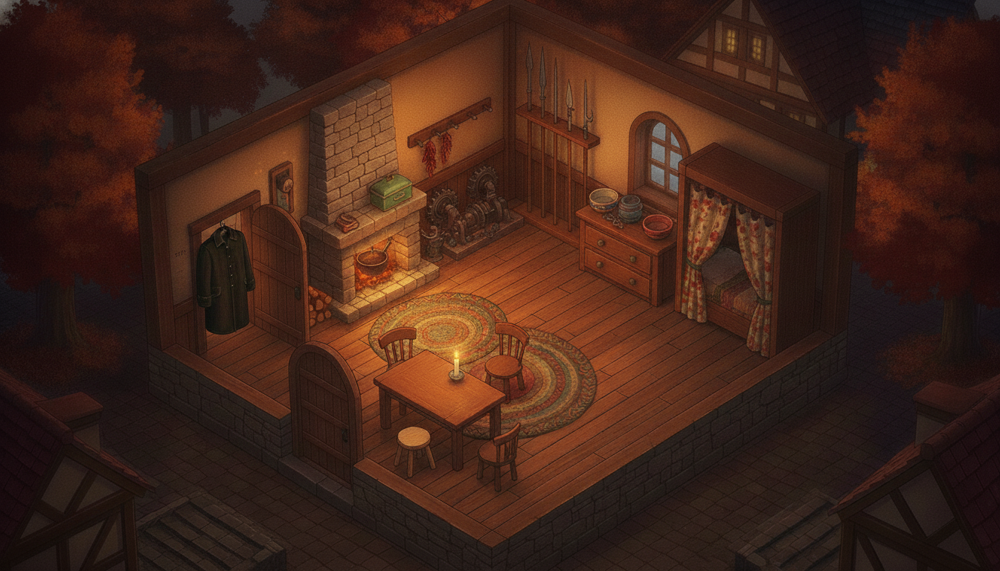
accepted — cottage/main.png (= lively-roll3, the 2026-07-22 hull-paint repaint; previous final parked as candidates/pre-lively-main.png). All five storytelling props kept: tally doorframe, oilskin + empty peg, locked bare-wood drawer (now the one unpainted face on a hull-red dresser), eel-spears/winch-parts, worn chairs + newer pale stool.
Director's note: the interior should read as the home of Dellhollow people — hull-paint on the
painted-wood things, brighter firelight, more of Maren's and Odessa's texture. Same room, same layout, same
camera; the five storytelling props sacred and bare-wood. Anchored on the previous final + master-6b.
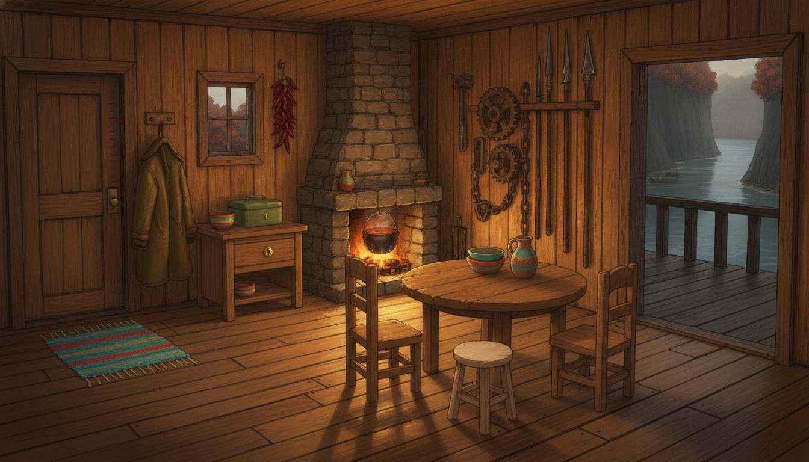
previous final — pre-lively-main.png. Warm but somber-brown; the painting being replaced.
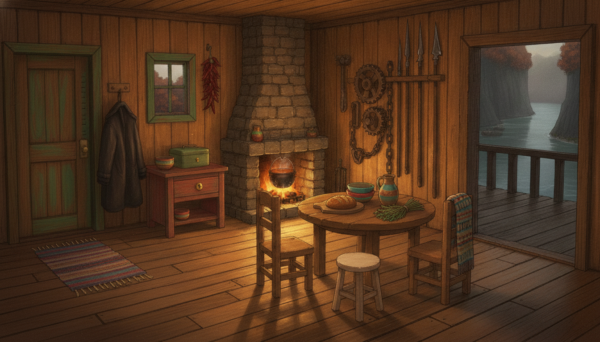
superseded — lively-roll1: all five props held; boat-green door, red dresser, blanket, bread + herbs. But the sacred drawer face got painted red, window came out green not teal, corners still murky.
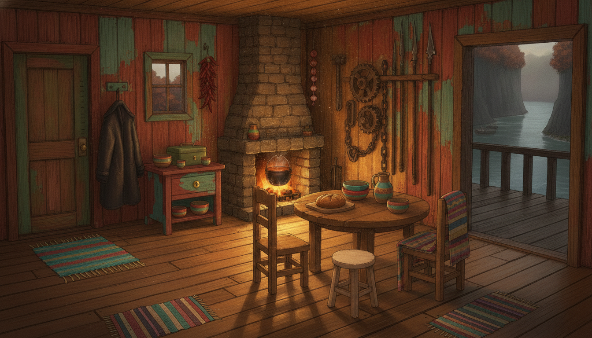
rejected — lively-roll2: props held, but whole walls painted chipped red/teal and three rugs — reads festival, loses the intimacy; drawer face painted too.
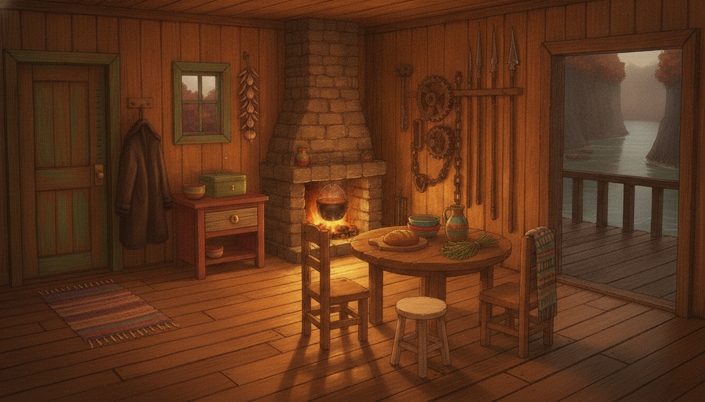
ACCEPTED → main.png — lively-roll3 (refinement of roll1): drawer face back to bare oiled wood against the red dresser, corners lifted with warm firelight, onion string by the hearth. All five props verified at zoom. Known niggles: pepper string became onions, window frame green rather than teal.
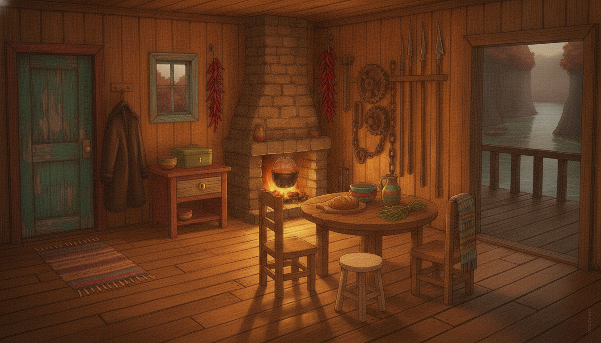
rejected — lively-roll4 (attempted pepper/teal fix): overreached — door's inside face turned teal (boat-green lost), tallies migrated onto the painted door face, onion string dropped, stray pepper string over the tool wall.
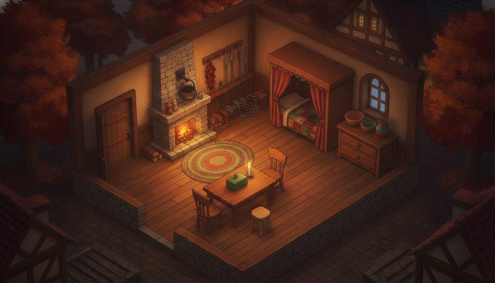
rejected — cand1: oilskin coat entirely missing; tallies read as faint scratches only.
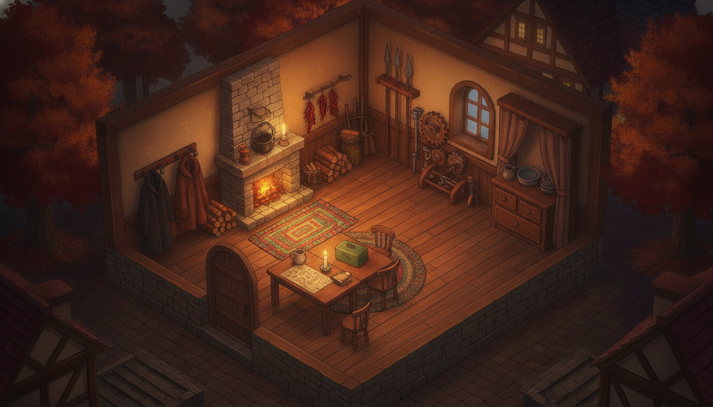
rejected — cand2: coat present but no visible height-tallies; third seat not readable as newer wood; stray chart-like paper on the table.
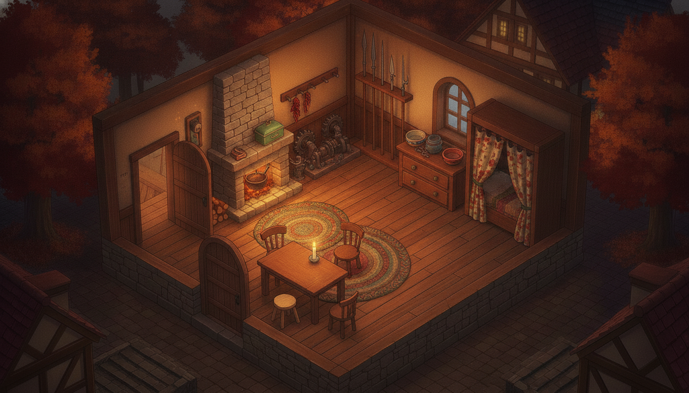
rejected — cand3: best base (tallies + pale stool + bare table) but the coat dropped again.

accepted — cand4: additive edit of cand3 — adds the oilskin on its peg, darkens the tally notches. Everything else preserved.
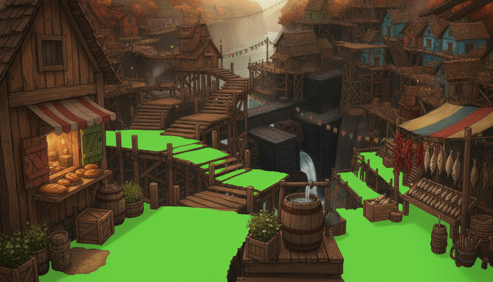
stairs/maskraw.png — flood roll 1, accepted.
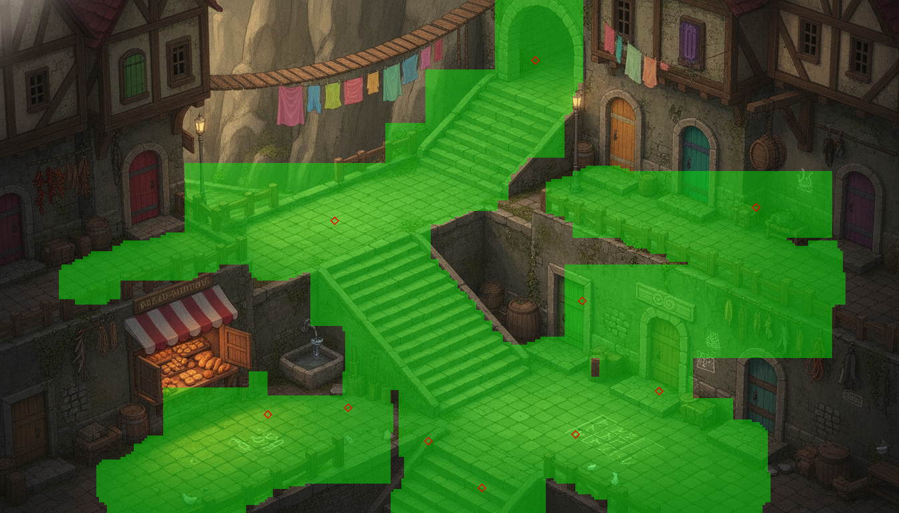
stairs mask composite (red diamonds = BFS check points). Coverage 44%, 1 component = 100% of green, 10/10 POIs+mouths connected.
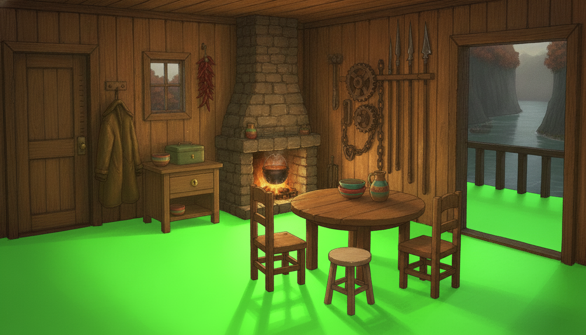
cottage/maskraw.png — flood roll 1, accepted.
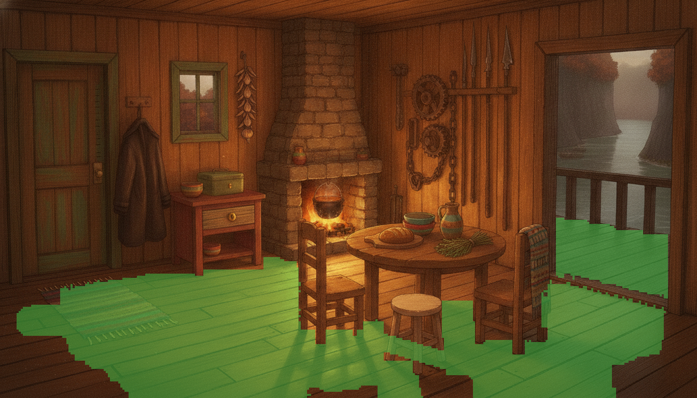
cottage mask composite. Coverage 14% (interior — accepted deviation, cf. lockfive 18%), 1 component, 7/7 POIs+mouth connected.